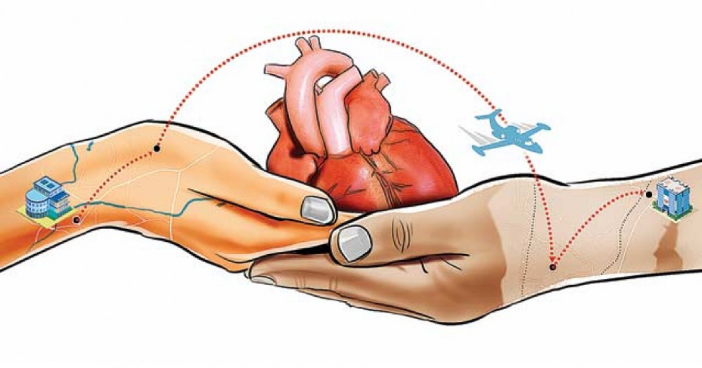

| Características del corazón para ser trasplantado |
El trasplante de corazón se realiza cuando el órgano del paciente esta con insuficiencia cardíaca terminal, pobre calidad de vida, riesgo de muerte súbita, ausencia de respuesta al tratamiento médico máximo o a una cirugía convencional.
Para que el corazón sea donado a personas necesitadas tiene que ser
|
 |
| -Donado por alguien que esté clínicamente muerto, pero que permanezca con soporte vital. |
| -Condición normal, sin enfermedades |
| -Compatible con su tipo de sangre y/o tejido para reducir la probabilidad de que el cuerpo lo vaya a rechazar |